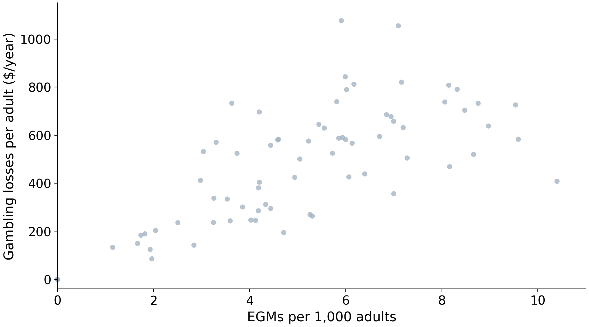
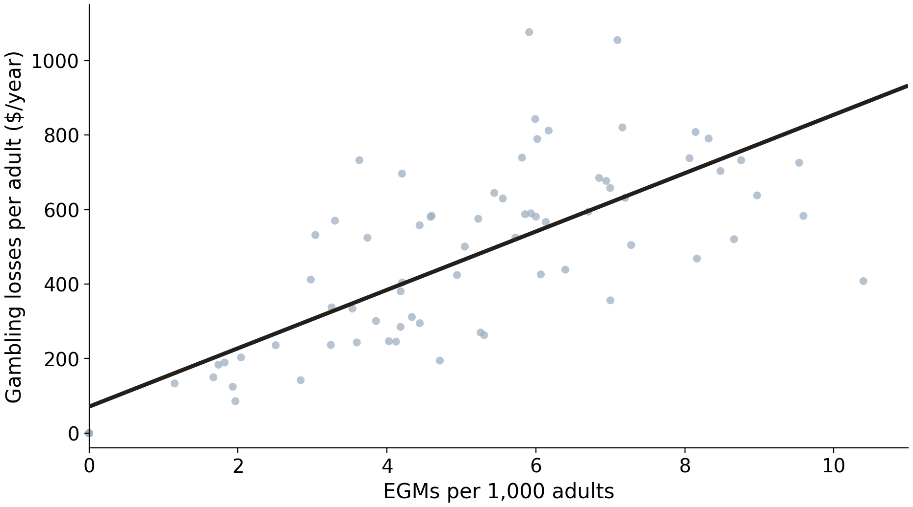
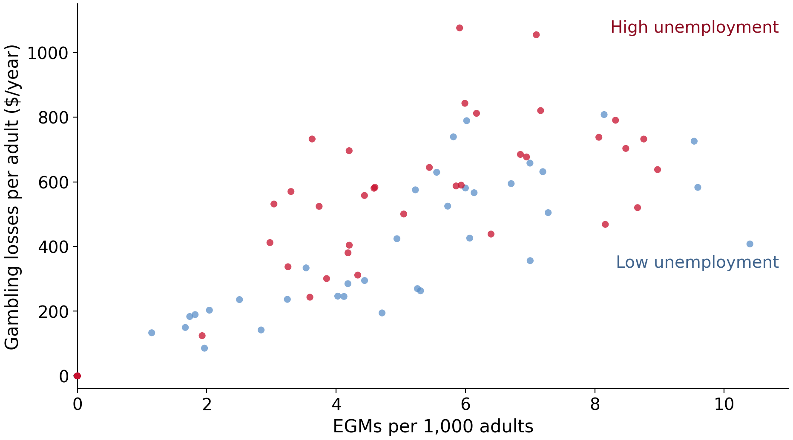
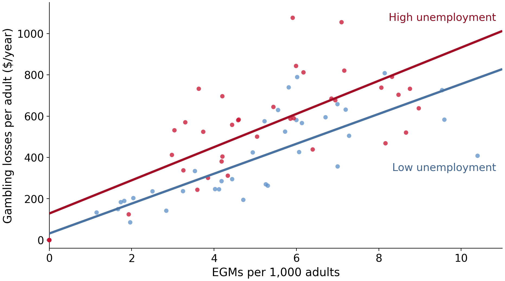
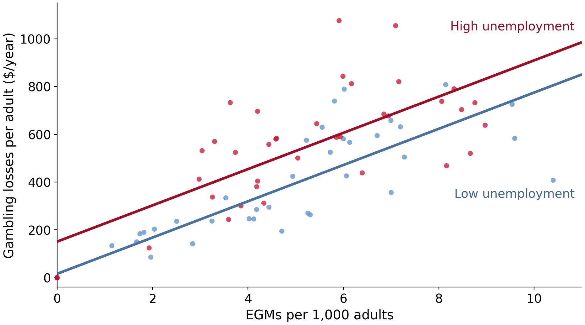
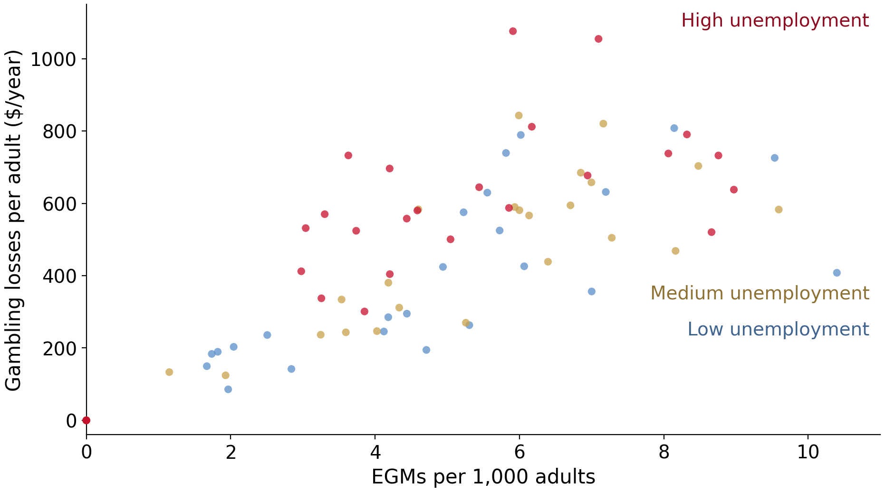
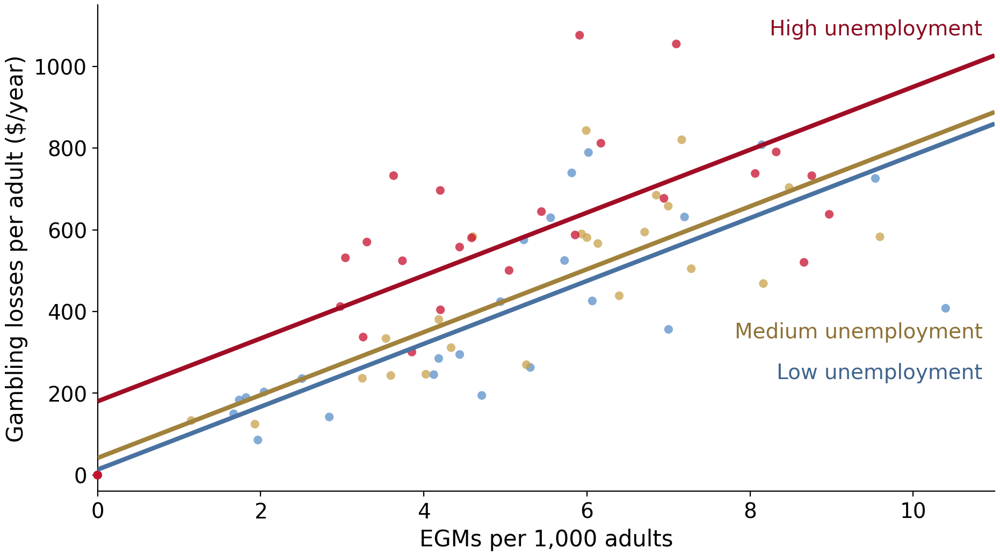

1 What is econometrics?
2 Basic mathematical tools
3 Stats fundamentals
4 Stats fundamentals II
5 Simple regression
6 OLS properties & fit
7 Flavors of OLS & OVB Quiz
8 Causality
9 Regression inference
10 Inference, continued PS due 16 Oct
11 Diagnostics
12 Measurement error & IRL
13 Revision

Data: VGCCC 2024, 79 Victorian LGAs
How many dollars per pokie?
Same method as before
New data
As usual, it will open directly in Colab
Click Copy to Drive first, so you can save your edits
from statsmodels.formula.api import ols
model = ols("exp_per_adult ~ egm_per_1000", data=pokies).fit() coef std err t P>|t| [0.025 0.975]
--------------------------------------------------------------------------------
Intercept 71.1722 38.992 1.825 0.072 -6.471 148.816
egm_per_1000 78.2968 7.205 10.866 0.000 63.949 92.645
\widehat{\text{losses}} = 71 + 78 \times \text{EGMs per 1,000}
Data: VGCCC 2024, 79 Victorian LGAs
Our simple regression conditioned on one variable
Take 2 LGAs with the same pokie density, one high-unemployment and one low: does the high one still lose more?
E[\,\text{losses} \mid \text{EGMs}, \text{unemployment} = \text{high}\,]
E[\,\text{losses} \mid \text{EGMs}, \text{unemployment} = \text{low}\,]
median_val = pokies["ue_rate"].median()
pokies["high_ue"] = (pokies["ue_rate"] > median_val).astype(int)high_ue stores the answer to our comparison
.astype(int) turns True/False into 1 and 0: 1 means above-median unemployment (39 LGAs), 0 means below-median (40 LGAs)
A 0/1 variable is called a dummy variable

Data: VGCCC 2024, 79 Victorian LGAs

Data: VGCCC 2024, 79 Victorian LGAs
Instead of splitting the sample,
put both variables in one regression
and use all 79 LGAs
\text{losses}_i = \beta_0 + \beta_1 \, \text{EGMs}_i + \beta_2 \, \text{high\_ue}_i + u_i
For low-unemployment LGAs (\text{high\_ue} = 0): intercept \beta_0
For high-unemployment LGAs (\text{high\_ue} = 1): intercept \beta_0 + \beta_2
Same slope \beta_1 in both groups: two parallel lines
coef std err t P>|t| [0.025 0.975]
--------------------------------------------------------------------------------
Intercept 16.1362 38.739 0.417 0.678 -61.018 93.291
egm_per_1000 75.8681 6.674 11.367 0.000 62.575 89.161
high_ue 134.7112 35.300 3.816 0.000 64.406 205.016
Data: VGCCC 2024, 79 Victorian LGAs
Two regressions, two slopes
One regression, one shared slope
Data: VGCCC 2024, 79 Victorian LGAs
pokies["ue_pct"] = 100 * pokies["ue_rate"]
ols("exp_per_adult ~ egm_per_1000 + ue_pct", data=pokies).fit() coef std err t P>|t| [0.025 0.975]
--------------------------------------------------------------------------------
Intercept -115.9316 49.520 -2.341 0.022 -214.559 -17.304
egm_per_1000 72.8291 6.329 11.507 0.000 60.224 85.434
ue_pct 61.1848 11.845 5.165 0.000 37.593 84.776Uses all the data for every coefficient \rightarrow more precise estimates
Holds the other X fixed: but only the variables we put in the formula
Scales: if we have 3, 4, or 10 X-variables, splitting would not work!
One regression
Two intercepts
Two slopes
\text{losses}_i = \beta_0 + \beta_1 \, \text{EGMs}_i + \beta_2 \, \text{high\_ue}_i + \beta_3 \, (\text{EGMs}_i \times \text{high\_ue}_i) + u_i
Low unemployment (\text{high\_ue} = 0): intercept \beta_0, slope \beta_1
High unemployment (\text{high\_ue} = 1): intercept \beta_0 + \beta_2, slope \beta_1 + \beta_3
\beta_3 is the difference in slopes between the two groups
coef std err t P>|t| [0.025 0.975]
----------------------------------------------------------------------------------------
Intercept 31.9430 47.186 0.677 0.501 -62.056 125.942
egm_per_1000 72.3339 8.976 8.058 0.000 54.453 90.215
high_ue 96.7287 73.302 1.320 0.191 -49.296 242.753
egm_per_1000:high_ue 7.9900 13.496 0.592 0.556 -18.896 34.876Data: VGCCC 2024, 79 Victorian LGAs
coef std err t P>|t| [0.025 0.975]
----------------------------------------------------------------------------------------
Intercept 31.9430 47.186 0.677 0.501 -62.056 125.942
egm_per_1000 72.3339 8.976 8.058 0.000 54.453 90.215
high_ue 96.7287 73.302 1.320 0.191 -49.296 242.753
egm_per_1000:high_ue 7.9900 13.496 0.592 0.556 -18.896 34.876a * b means a + b + a:b, so an interaction never enters without its parts
30% of your grade
Opens Friday 2 October at 9:00, due Friday 16 October at 23:55
Covers material through week 9
Low, medium, high
One formula
Which numbers?
pokies["ue_cat"] = pd.qcut(pokies["ue_pct"], 3,
labels=["low", "medium", "high"])
pokies["ue_cat"].value_counts()ue_cat
low 27
medium 26
high 26
Name: count, dtype: int64pd.qcut cuts at the tertiles (2.9% and 4.0%) so the groups are of equal size

Data: VGCCC 2024, 79 Victorian LGAs
# low = 1, medium = 2, high = 3
pokies["ue_code"] = pokies["ue_cat"].cat.codes + 1
ols("exp_per_adult ~ egm_per_1000 + ue_code", data=pokies).fit() coef std err t P>|t| [0.025 0.975]
--------------------------------------------------------------------------------
Intercept -85.6603 53.995 -1.586 0.117 -193.201 21.881
egm_per_1000 76.4537 6.642 11.511 0.000 63.225 89.682
ue_code 83.2945 21.444 3.884 0.000 40.585 126.004One coefficient forces the medium-to-high gap to equal the low-to-medium gap
coef std err t P>|t| [0.025 0.975]
---------------------------------------------------------------------------------------
Intercept 13.2748 41.581 0.319 0.750 -69.558 96.108
C(ue_cat)[T.medium] 28.5316 42.573 0.670 0.505 -56.279 113.342
C(ue_cat)[T.high] 167.0544 42.553 3.926 0.000 82.284 251.825
egm_per_1000 76.9259 6.597 11.660 0.000 63.783 90.069Low = reference category
i.e., each coefficient is a gap relative to low, at the same pokie density

\widehat{\text{losses}} = 13 + 77 \times \text{EGMs} + 29 \times \text{medium} + 167 \times \text{high}
Data: VGCCC 2024, 79 Victorian LGAs
summary_col([model, multi, multi_ue, levels, inter], stars=True, float_format="%.2f",
model_names=["Simple", "Dummy", "Percent", "3 levels", "Interaction"]) Simple Dummy Percent 3 levels Interaction
----------------------------------------------------------------------------
Intercept 71.17* 16.14 -115.93** 13.27 31.94
(38.99) (38.74) (49.52) (41.58) (47.19)
egm_per_1000 78.30*** 75.87*** 72.83*** 76.93*** 72.33***
(7.21) (6.67) (6.33) (6.60) (8.98)
high_ue 134.71*** 96.73
(35.30) (73.30)
ue_pct 61.18***
(11.85)
C(ue_cat)[T.medium] 28.53
(42.57)
C(ue_cat)[T.high] 167.05***
(42.55)
egm_per_1000:high_ue 7.99
(13.50)
R-squared 0.61 0.67 0.71 0.68 0.67
R-squared Adj. 0.60 0.66 0.70 0.67 0.66The slope on pokie density: 78 alone, 76 with the dummy, 73 with the percentage
Each extra variable holds fixed one more thing, and only that one thing
Remoteness, venue rules: unmeasured, so still in the slope